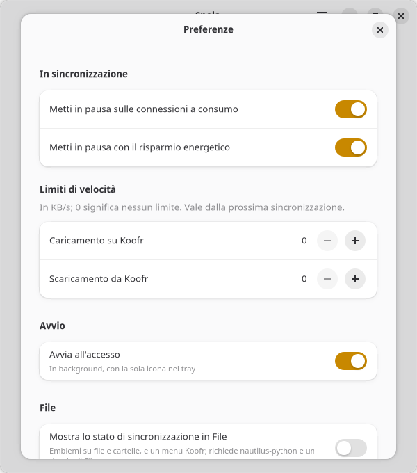

Spola
Sincronizza le tue cartelle con Koofr, su GNOME.
Spola tiene identiche, in entrambe le direzioni e in background, le cartelle del tuo computer e quelle su Koofr. Il nome è quello della spola del telaio, che porta il filo da un lato all'altro; in italiano fare la spola vuol dire andare avanti e indietro. Sotto c'è il motore a due vie di rclone; sopra, un'app GTK 4 che mette al primo posto la sicurezza dei tuoi file. Gratuita e open source (MIT).
Da terminale: flatpak install https://daniel-g-carrasco.github.io/spola/spola.flatpakref.
Gli aggiornamenti arrivano da soli, con GNOME Software o con flatpak update.
Su Margine OS: ujust install-spola.

Come funziona
Si entra con l'indirizzo dell'account Koofr e una password per applicazioni (si crea dalle
impostazioni dell'account: Koofr non accetta la password principale da altri programmi), poi si scelgono
le coppie: una cartella sul computer e una su Koofr. Spola sta nel tray, si accorge delle modifiche locali
appena succedono e di quelle fatte da altri dispositivi entro un minuto, e ogni ora rifà un controllo
completo. Non ci sono motori scritti da zero: ogni giro è un rclone bisync, con le sue
protezioni e qualcuna in più.
Prima di tutto, i tuoi file
- Un'anteprima prima di ogni passo importante. Il primo allineamento di una cartella, una riparazione e ogni giro fermato da un controllo di sicurezza ti mostrano l'elenco di ciò che succederebbe, e partono solo se confermi.
- Niente cancellazioni a sorpresa. Un giro che eliminerebbe più del 10% dei file di una parte si ferma e aspetta. I file eliminati o sostituiti sul computer finiscono in un backup locale per 30 giorni; su Koofr, nel cestino di Koofr.
- Conflitti senza perdite. Un file cambiato da entrambe le parti resta in due copie con nomi leggibili; una finestra ti fa scegliere quale continua, e l'altra va nel cestino.
- Disco non montato, cartella sostituita: la coppia si ferma prima ancora di avviare rclone, invece di vedere una cancellazione totale.
- I nomi che Koofr rifiuta (emoji, nomi che differiscono solo per maiuscole) restano fuori dal giro e ti vengono segnalati; il resto si sincronizza.
- La password resta nel portachiavi e non passa mai da una riga di comando.

Nel gestore di file
Con un interruttore nelle Preferenze, File (Nautilus) mostra un emblema su ogni file e cartella
sincronizzati: aggiornato, in corso, in attesa, errore, conflitto, escluso. Con il tasto destro:
Sincronizza ora con Koofr, Apri su Koofr, Copia il link di condivisione.
Serve nautilus-python sul sistema (Margine OS lo ha già).
Preferenze ed esclusioni
Pausa sulle connessioni a consumo e in risparmio energetico, avvio all'accesso, giorni di conservazione dei backup, limiti di velocità, lingua dei nomi delle copie in conflitto. Ogni coppia ha le sue esclusioni, già pronte per i file temporanei e per ciò che Koofr Desktop lasciava fuori.

Se usi Koofr Desktop
Spola rileva le coppie di cartelle di Koofr Desktop e le prende in carico (spola import-koofr-desktop,
o ujust install-spola migrate su Margine OS). Prima va fermato Koofr Desktop: due motori sulle stesse
cartelle sono il modo più rapido per perdere file. Di solito le cartelle sono già identiche sulle due parti e il
primo allineamento non trasferisce nulla, ma lo vedi comunque in anteprima.
Spola non è affiliata a Koofr.
In English
Spola keeps folders on your computer and folders on Koofr identical, in both directions, in the background. It is a GTK 4 app built on rclone's two-way sync, with a preview before every big step, a stop before mass deletions, conflicts that keep both versions, a tray icon and emblems in Files. Install it on Linux from the Flatpak repository above. Not affiliated with Koofr.